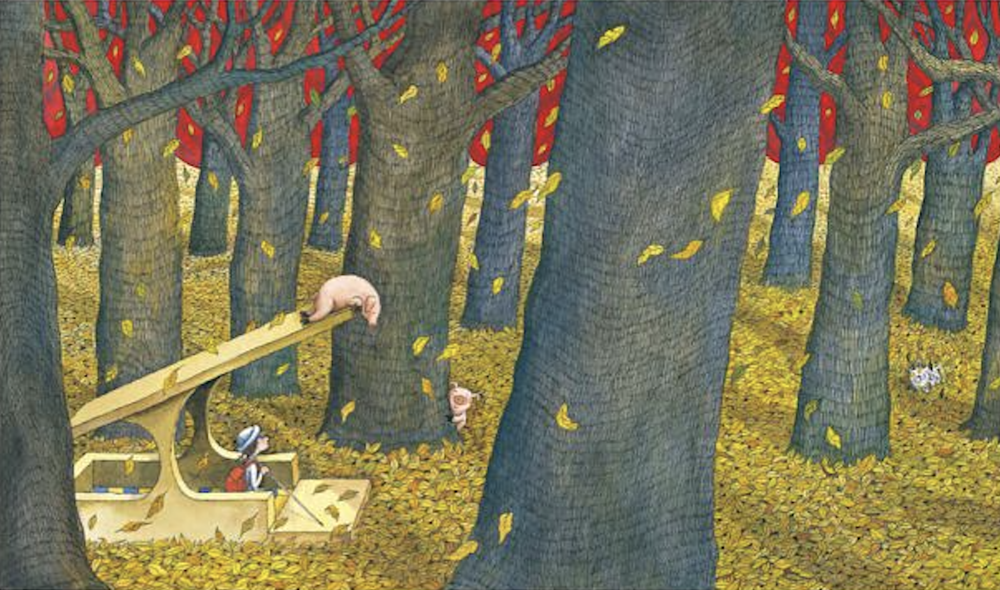

以然学姐：
如果你看到了这里，说明你还是那个细心的学姐，一眼就看穿了我的小秘密。那我就不再绕弯子啦。
其实，dxt是我设计的，并不需要你去找谁。
我只是觉得，你可能把自己弄丢太久了，再次见到你的时候，我差点认不出你，。
你可能不知道，那段时间你给过多少人温暖。你在阅览室坐下来的那一刻，你递过来的那本《地下铁》，你什么都没问，却让我觉得，我可以打开自己了。
后来上了高中，我才发现你慢慢离大家都远了。当时我不懂，只觉得遗憾。现在我才明白，原来你一直在自责，以至于。
关于邹言学姐，我觉得就像两只一起走过路的小动物。你们给过对方最真的心，只是后来的路太难走了，只能在那个路口散开。这真的不是你的错，学姐，那不是伪善，你真的已经尽力了。
而我很幸运。人生的另一个时间点。以前是你照顾我，这次换我来陪着你吧。
我不是想逼你回去面对什么，更不是想替谁说原谅。我只是想让你知道——你曾经给予的善意，没有消失，它只是搭上了不同的列车，去了别的地方。
如果哪一天你愿意走出那段阴霾，不是为了任何人，只是为了你自己，那就已经足够了。
生活总要往前走的，但那个下午你坐到我身边的样子，我会记得好久好久。
祝你安好，不止今天。